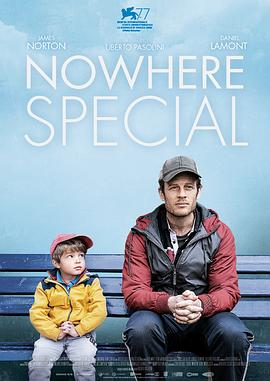

默默无闻 / Nowhere Special
又名：为你找个家
又是被简介看催泪的
作品信息
| 导演 | 乌贝托·帕索里尼 |
| 编剧 | 乌贝托·帕索里尼 |
| 主演 | 詹姆斯·诺顿 / 丹尼尔·拉蒙特 / 艾琳·奥希金斯 / 瓦莱丽·奥康纳 / 瓦伦·凯恩 / 基思·麦克利恩 / 希沃恩·麦克斯维尼 / 克里斯·科里根 / 妮芙·麦克高迪 / 考兰·伯恩 / 斯特拉·麦克考斯克 / 罗伊森·加拉格尔 / 尼格尔·奥尼尔 / 埃娃·莫里斯 / 劳拉·休斯 / 格雷斯·汉娜 / 卡罗尔·摩尔 / 肖恩·斯隆 / 罗达·奥福里-阿塔 / 阿舍·德·席尔瓦 / 利比·麦克布莱德 / 希洛·德·席尔瓦 / 伊娃·阿金塞欣德 |
| 类型 | 剧情 |
| 制片国家/地区 | 意大利 / 罗马尼亚 / 英国 |
| 语言 | 英语 |
| 上映日期 | 2020-09-10(威尼斯电影节) / 2021-07-16(英国) / 2021-12-08(意大利) |
| 片长 | 96分钟 |
| IMDb | tt11286640 |
说过什么
2024-10-05 18:40:14
广播 · 想看
又是被简介看催泪的
最后一次看到是 2026-08-01T11:08:04+10:00 · 豆瓣原页